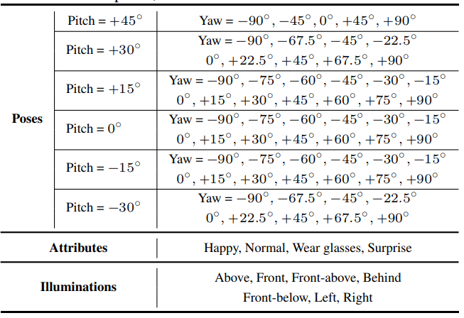

INTRODUCTION
The M2FPA dataset is constructed by Center for Research on Intelligent Perception and Computing (CRIPAC), National Laboratory of Pattern Recognition (NLPR), Institute of Automation, University of Chinese Academy of Sciences (CASIA). The M2FPA dataset totally involves 397,544 images of 229 subjects with 62 poses (including 13 yaw angles, 5 pitch angles and 44 yaw-pitch angles), 4 attributes and 7 illuminations.
Figure 1. An example of the yaw and pitch variations in our M2FPA database.
Table 1. The poses, attributes and illuminations in M2FPA.
Figure 2. The diagram of camera position.
CONTENT
By now, we provide the cropped 512*512 images, the ID annotations, the training/testing lists and the testing protocol. In the main folder, we have totally 229 subfolders, each of which contains all images belong to the same subject. Taking the subfolder 0001 as an example, the document tree is listed as follows:
Taking above2-1.jpg as an example, “above” represents illustration position, “2-1” represents the camera number. The detailed relationships between the camera number and face pose are shown in Table 2.
| Camera number | Face Pose |
| 2-1 | Pitch = +30°, Yaw = -90° |
| 2-2 | Pitch = +30°, Yaw = -67.5° |
| 2-3 | Pitch = +30°, Yaw = -45° |
| 2-4 | Pitch = +30°, Yaw = -22.5° |
| 2-5 | Pitch = +30°, Yaw = 0° |
| 2-6 | Pitch = +30°, Yaw = +22.5° |
| 2-7 | Pitch = +30°, Yaw = +45° |
| 2-8 | Pitch = +30°, Yaw = +67.5° |
| 2-9 | Pitch = +30°, Yaw = +90° |
| 3-1 | Pitch = +15°, Yaw = -90° |
| 3-2 | Pitch = +15°, Yaw = -75° |
| 3-3 | Pitch = +15°, Yaw = -60° |
| 3-4 | Pitch = +15°, Yaw = -45° |
| 3-5 | Pitch = +15°, Yaw = -30° |
| 3-6 | Pitch = +15°, Yaw = -15° |
| 3-7 | Pitch = +15°, Yaw = 0° |
| 3-8 | Pitch = +15°, Yaw = +15° |
| 3-9 | Pitch = +15°, Yaw = +30° |
| 3-10 | Pitch = +15°, Yaw = +45° |
| 3-11 | Pitch = +15°, Yaw = +60° |
| 3-12 | Pitch = +15°, Yaw = +75° |
| 3-13 | Pitch = +15°, Yaw = +90° |
| 4-1 | Pitch = 0°, Yaw = -90° |
| 4-2 | Pitch = 0°, Yaw = -75° |
| 4-3 | Pitch = 0°, Yaw = -60° |
| 4-4 | Pitch = 0°, Yaw = -45° |
| 4-5 | Pitch = 0°, Yaw = -30° |
| 4-6 | Pitch = 0°, Yaw = -15° |
| 4-7 | Pitch = 0°, Yaw = 0° |
| 4-8 | Pitch = 0°, Yaw = +15° |
| 4-9 | Pitch = 0°, Yaw = +30° |
| 4-10 | Pitch = 0°, Yaw = +45° |
| 4-11 | Pitch = 0°, Yaw = +60° |
| 4-12 | Pitch = 0°, Yaw = +75° |
| 4-13 | Pitch = 0°, Yaw = +90° |
| 5-1 | Pitch = -15°, Yaw = -90° |
| 5-2 | Pitch = -15°, Yaw = -75° |
| 5-3 | Pitch = -15°, Yaw = -60° |
| 5-4 | Pitch = -15°, Yaw = -45° |
| 5-5 | Pitch = -15°, Yaw = -30° |
| 5-6 | Pitch = -15°, Yaw = -15° |
| 5-7 | Pitch = -15°, Yaw = 0° |
| 5-8 | Pitch = -15°, Yaw = +15° |
| 5-9 | Pitch = -15°, Yaw = +30° |
| 5-10 | Pitch = -15°, Yaw = +45° |
| 5-11 | Pitch = -15°, Yaw = +60° |
| 5-12 | Pitch = -15°, Yaw = +75° |
| 5-13 | Pitch = -15°, Yaw = +90° |
| 6-1 | Pitch = -30°, Yaw = -90° |
| 6-2 | Pitch = -30°, Yaw = -45° |
| 6-3 | Pitch = -30°, Yaw = -45° |
| 6-4 | Pitch = -30°, Yaw = -22.5° |
| 6-5 | Pitch = -30°, Yaw = 0° |
| 6-6 | Pitch = -30°, Yaw = +22.5° |
| 6-7 | Pitch = -30°, Yaw = +45° |
| 6-8 | Pitch = -30°, Yaw = +67.5° |
| 6-9 | Pitch = -30°, Yaw = +90° |
Table 2. The detailed relationships between the camera number and face pose.
For testing, we have one gallery list “gallery0.txt” and 30 probe lists “probe_xx_xx.txt”. The gallery list contains the 67 gallery images with frontal view, neutral attribute and above illumination. The probe lists contain all the profile faces with various pitch and yaw poses. Finally, we will update the original 1960x1080 images with five facial landmark annotations in the future.
LICENSE
- The images (512*512) and the corresponding id annotations for download are part of M2FPA dataset.
- The images and the corresponding annotation results can only be used for ACADEMIC PURPOSES. NO COMERCIAL USE is allowed.
- Copyright © Center for Research on Intelligent Perception and Computing, National Laboratory of Pattern Recognition, Institute of Automation, University of Chinese Academy of Sciences. All rights reserved.
All publications using M2FPA dataset should cite the paper below:
Peipei Li, Xiang Wu, Yibo Hu, Ran He, Zhenan Sun: M2FPA: A Multi-Yaw Multi-Pitch High-Quality Database and Benchmark for Facial Pose Analysis. ICCV 2019.
DOWNLOAD
You can download the agreement (pdf) from here. After filling it, please send the electrical version to our Email: m2fpa@cripac.ia.ac.cn (Subject: M2FPAMAGREEMENT). After confirming your information, we will send the download link and password to you via Email. You need to follow the agreement.